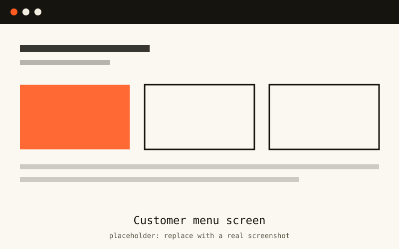
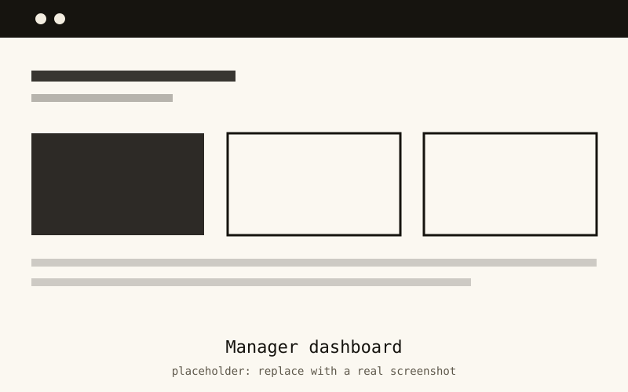

Case study
Cafeteria Management System
A desktop app that replaces paper orders and guesswork in a college cafeteria with a proper database, logins and a manager dashboard.
Overview
The Cafeteria Management System is a JavaFX desktop application backed by a PostgreSQL database. It has two kinds of users: customers, who browse the menu and place orders, and managers, who maintain the menu and keep track of what is being ordered.
I also wrote a formal VDM-SL specification of the system for a separate written submission, so the design was reasoned about before and after it was coded.
The problem
Cafeteria orders were handled by hand. That makes it easy to lose an order, hard for a manager to see what sells, and impossible to restrict who can change the menu. The college needed one place to take orders and manage the menu with the right people having the right access.
Features
- Two roles: Customer and Manager, each with their own screens.
- Secure login: passwords are hashed with BCrypt, never stored as plain text.
- Reliable orders: database transactions so an order is saved completely or not at all.
- Responsive UI: slow database work runs on background threads so the window never freezes.
- Clean structure: Singleton pattern for the database connection.
Screenshots


Technologies used
- Java
- JavaFX
- PostgreSQL
- BCrypt
- Maven
- Git & GitHub
- VDM-SL
What I learned
- Password security is more than a login form: hashing with BCrypt is the baseline.
- Transactions matter. A half-saved order is worse than a failed one.
- Anything slow must leave the UI thread, or the app feels broken.
- Writing a formal specification first exposes gaps in your thinking before they become bugs.